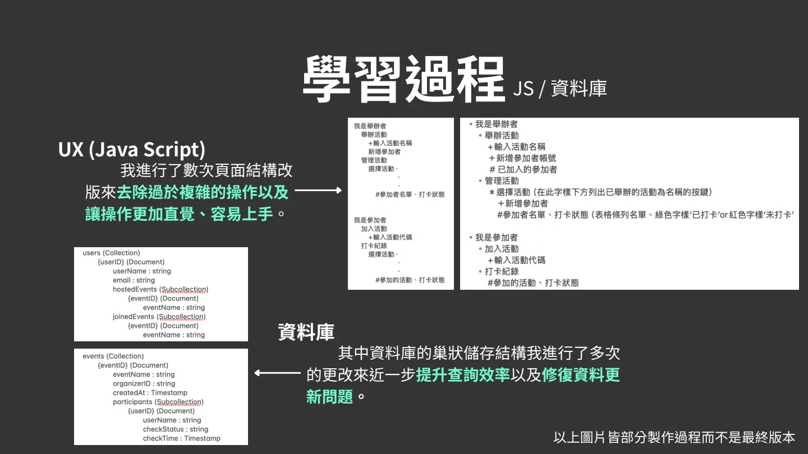

參加者
使用 Email 註冊登入、登錄人臉照片，再以活動碼加入活動。
COMPUTER SCIENCE / PROJECT STUDY
人臉辨識活動簽到系統
高二、五人小組、兩學期的自主學習專題。我從前端 UI 設計出發，逐步承接互動流程、資料庫與前後端整合，最後以家中舊電腦架設辨識服務，完成網頁到簽到紀錄的串接。
原專題的相機辨識需另行啟動 Python 後端；本頁是技術介紹，不會存取相機或上傳影像。
01 / THE PROBLEM
我們希望讓活動或小型會議的使用者，透過行動裝置與瀏覽器就能使用人臉簽到，減少對整套專用設備的依賴。因此，我們選擇以網頁呈現操作介面，將辨識運算放在另一端的伺服器。
設計目標來自專題報告的學習動機；未進行商用設備價格調查或成本比較實驗。手機仍需網路、相機權限，以及可連線的後端。
使用 Email 註冊登入、登錄人臉照片，再以活動碼加入活動。
建立與管理活動、查看參加者，並從活動詳情啟動相機簽到。
只讀取該活動參加者的特徵，比對成功後更新簽到狀態與時間。
PROJECT OWNERSHIP / 個人貢獻
團隊共五人，計畫跨兩學期、約九個月。
實際進度曾落後原訂安排，下列依工作階段整理。
團隊原定分為 UI、JavaScript 互動、資料庫、人臉模型，以及前後端連接五項。我從 HTML、CSS、元件配置與使用體驗開始。
UI、互動與資料設計高度連動，加上跨班討論時間有限，我主動承接 UX 與資料整合。後期因串接不完整、執行不穩定與僅能本機運行，再接手服務架設與辨識程式整合。
我以組員原有辨識程式為基礎，更新處理邏輯、修復路徑取用並連接網頁。這份專題的個人重點是系統整合；現存後端使用預訓練 FaceNet，不將模型訓練列為我的個人成果。
學習 HTML、CSS 後仍只能完成基本靜態頁面，因此轉為需求導向：與 ChatGPT 協作建立架構，再針對不懂的段落詢問、實作與修正。
重新釐清 margin、padding 與父子層級關係，並參考 UI 設計影片及 Apple 開發者介面設計說明，調整頁面層級、按鈕位置與操作步驟。
承接頁面切換、動畫觸發及資料庫串接，多次調整巢狀儲存結構，處理查詢路徑與資料更新問題，並開始重視 CSS、JavaScript 的模組化與重用。
為避免租用伺服器的費用，改用家中舊電腦運行後端，採 WebSocket 通訊；在組員原有程式上修復路徑、調整邏輯，完成前後端串接。報告記錄的「一週多」是這個整合階段，不是整個專題工期。
依據：個人專題報告第 3、5–17 頁；個人貢獻另與多元表現綜整第 5–6 頁交叉核對。
DESIGN ITERATIONS / 實際遇到的問題
以下整理當時的問題、採取的方法與取捨。
沒有量測的改善，不寫成效能百分比。
問題：元件堆疊超出畫面後產生捲動；改用定位配置，又遇到不同解析度下的位置與比例差異。
做法：釐清父子層級、內外邊距，為不同解析度範圍設定定位標準，反覆調適。綜整也記錄以一次調整一個變數的方式定位問題。
取捨：能控制單一畫面的配置，但需維護多組裝置規則；目前程式大量採用定位，長文字與不同裝置仍值得持續驗證。
問題：UI、互動與資料庫不是能各自完成後直接拼接的工作；頁面層級與資料查詢路徑會互相影響。
做法：多次重排主辦者、參加者的操作層級，並修改使用者活動索引與活動參加者的巢狀結構。下方保留報告中的過程證據。
取捨：個人活動清單與活動參加名單各有索引，讀取方便，但加入、退出或刪除時須維持兩端一致。現存版本仍需強化原子寫入與清理機制。
問題：後端整合初期有路徑錯誤、功能未完整串接與僅限本機執行的情況。
做法：以舊電腦承載 Python 服務，使用 WebSocket 傳影像與辨識結果。前端現存程式配置 WSS 的 Cloudflare Tunnel 位址。
取捨：重用既有硬體避免租機，但服務可用性受主機電源、網路與通道影響。報告明載為節能，後端並非常駐開啟。
問題：AI 能快速產生架構，但對複雜頁面結構與跨裝置 CSS 效果，產出未必符合實際需求。
做法：把大問題拆成小問題，針對程式段落詢問用途；以實際畫面與單一變數調整查明原因，再決定是否採用建議。
收穫：AI 用於架構、理解與除錯，設計合理性與結果判斷仍由我負責。報告中的效率圖屬個人感受，不作為量化開發效能證據。

報告記錄曾接觸 Firebase、Supabase 與 SQL 查詢規則，屬於當時的學習與實作歷程。現存公開前端與本機辨識後端採用 Firebase Authentication 與 Cloud Firestore；本頁不將 Supabase 或 SQL 描述成目前執行中的資料流程。查詢效率的改善在報告中是設計目的，尚無前後測數據。
02 / UNDER THE HOOD
同一套前處理，用於照片登錄與相機辨識。
選擇步驟，查看實作細節。
CAPTURE / TRANSPORT
瀏覽器透過 getUserMedia 取得視訊，Canvas 依原始影片尺寸擷取畫面，轉為品質參數 0.7 的 JPEG data URL，再以 WebSocket JSON 傳送活動 ID 與影像。
{
"type": "match_event_face",
"eventID": "活動 ID",
"data": "data:image/jpeg;base64,…"
}這是定時送圖的辨識流程；3 秒是送圖間隔，不是模型推論延遲。
sync_upload → 解碼原圖 → 偵測與裁切 → FaceNet → 以 UID 儲存 .npy 特徵檔。後端也保存原圖與裁切圖；check_face_image 以特徵檔是否存在判斷登錄狀態。
03 / SYSTEM ARCHITECTURE
網頁處理操作，Python 執行辨識，
Firebase 維護身分與活動資料。
原生 HTML、CSS、JavaScript ES Modules，搭配 jQuery 動畫。
asyncio、websockets、OpenCV、MTCNN、TensorFlow、keras-facenet、NumPy。
帳號、活動與簽到紀錄在雲端；人臉影像與特徵由 Python 後端保存於本機。
後端先取得 events/{eventID}/participants 的 UID，再逐一載入對應特徵。比對數量隨該活動已登錄特徵的參加者數成長，並非搜尋全部使用者。
達門檻後，以 merge=True 寫入 checkStatus: 已打卡 與伺服器時間戳 checkTime，並回傳 UID 讓前端顯示姓名。
users/{uid}
├─ userName, email, createdAt
├─ hostedEvents/{eventID}
└─ joinedEvents/{eventID}
events/{eventID}
├─ eventName, organizerID, createdAt
└─ participants/{uid}
├─ userName
├─ checkStatus
└─ checkTime04 / DECISION LOGIC
後端的分數定義為 s = 1 − ‖e₁ − e₂‖₂，挑選最高分參加者，並在 s ≥ 0.69 時接受。等價於 L2 距離不大於 0.31；這個分數不是機率，也不是 69% 的辨識準確率。
程式直接呼叫 FaceNet 的底層 model；未見額外的輸入標準化、特徵 L2 正規化或關鍵點對齊步驟。這些處理是否符合模型預期，仍需驗證。
僅示意程式判定規則，未執行模型或讀寫資料。真實分數也可能低於 0，這裡只展示 0 到 1。
05 / EVALUATION & REFLECTION
以可查證的實作說明成果，
以可量測的問題規劃下一步。
完成帳號、活動、照片登錄與相機辨識的程式串接；將人臉特徵與 Firebase UID 關聯，並依活動限制候選名單。
技術重點在於跨越瀏覽器、辨識模型與資料庫的介面設計，以及把模型輸出轉為應用狀態。
目前沒有可引用的準確率、誤接受率、誤拒絕率或端到端延遲數據，亦未確認目前線上服務可用性。
後續以不同光線、角度、遮擋及未登錄者測試；分離門檻校準集與測試集，紀錄 FAR／FRR、延遲與活動規模。
後端目前即使資料庫寫入失敗仍可能回傳辨識成功；重複辨識也會覆寫簽到時間。需區分「辨識成功」與「簽到寫入成功」，設計可重試且不重設首次時間的操作。
同步推論位於非同步處理器內，仍可能阻塞其他連線；應加入工作佇列、傳輸背壓與逾時處理。
目前後端未見 Firebase ID token 驗證、活動管理授權或活體檢測。偵測信心值達 0.95 僅代表偵測結果符合門檻，不能證明是真人。
補上權限驗證、影像保存與刪除政策、多臉拒絕策略，以及照片／影片重播測試，才適合進一步評估實際部署。
06 / SOURCE NOTES
開發動機、分工與歷程依個人備審報告整理；技術流程另核對前端 36178ea 與本機原版 backend/server.py。未將修正版變更混入原版介紹。
22 頁：動機、分工、過程與反思第 5–6 頁：個人工作與後續延伸start/camera.js ↗照片登錄與資料編輯start/personalData.js ↗活動管理與參加流程manage.js / join.js ↗backend/server.py（本機）上述備審報告為本機提供的第一手專題紀錄，並非模型研究論文。此頁僅節錄與專題相關的敘述及過程圖，未公開完整備審、帳號資料或個人聯絡資訊。公開專題儲存庫目前僅含前端，未公開後端憑證、使用者照片或特徵檔。
EXPLORE THE IMPLEMENTATION
這次專題讓我開始關注網路、資料庫與軟體工程；後續的手勢 IoT 專題，則進一步補足影像辨識與演算法判斷的學習。
查看專題原始碼 ↗回看辨識流程 ↑